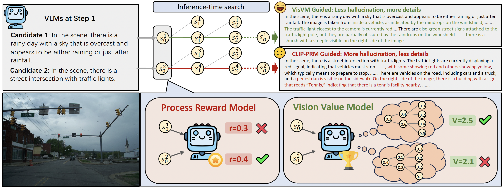

Vision Value Model
Vision Value Model (VisVM) is a value network which can provide reward signal to guide VLM inference-time search by generating descriptive captions in a step-by-step manner.

The core innovation lies in breaking down diverse responses from VLM into sentence pairs and using CLIP as the reward signal to train VisVM through Temporal Difference learning.

This enables VisVM to predict the impact of current sentences on future generations, allowing it to avoid response candidates during inference time with higher hallucination risks and generate image descriptions that are less prone to hallucination and more detailed.